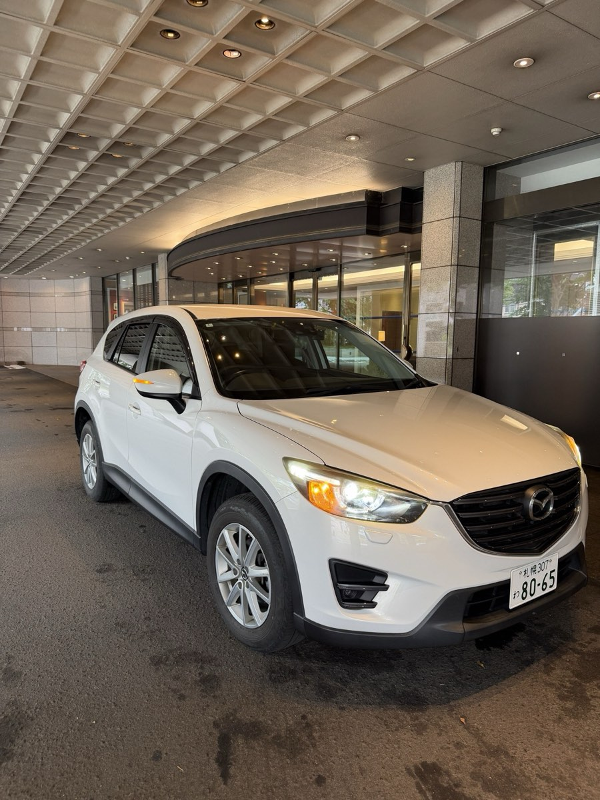

★★★★★ HANDYMAN札幌 Google口コミ 5.0（28件）
冬の札幌は「車が使えない」場面が増える季節
雪道でのスリップ事故やもらい事故、寒さによるバッテリー上がりや故障など、冬はトラブルが重なりがちです。修理工場も混雑するため、入庫期間が長くなることもよくあります。通勤や送り迎え、買い物に車が必要な札幌の暮らしを支えるために、ご自宅・職場・整備工場へ代車をお届けするのが、HANDYMANの代車お届けサービスです。
🚚 来店不要、代車がこちらから伺います
事故のあとで身動きがとれないときでも、ご自宅・職場・整備工場などご指定の場所までお持ちします。返却時も回収にうかがいます。
❄️ 冬用タイヤを付けてお届け
冬の期間はスタッドレスタイヤを装着済み。届いたその日から、札幌の雪道でもいつもどおりお使いいただけます。
💴 割引の代車価格
通常のレンタル料金より割り引いた代車価格でご案内します。お届け・回収の費用も含まれているので、総額が把握しやすくなっています。
🗓 1日〜長期OK
数日の車検から、数週間かかる修理まで対応します。期間がまだ決まっていない場合もご相談ください。
こんな場面でご利用ください
- スリップ事故やもらい事故で車が修理中：修理が完了するまでの間、通勤や送り迎えに使う車を確保できます。
- 冬場の故障やバッテリー上がり：車を預けた整備工場まで、代車をお届けします。
- 車検や冬タイヤ交換で混み合う時期：車を預ける数日間だけ、必要な日数を代車価格でご利用いただけます。
- 保険の代車では条件が合わない・足りない：車種や台数、期間が希望に合わないときの別の手段としてお使いください。
💡 自動車保険に代車費用特約が付帯していれば、対象となる場合があります。適用できるかどうかを保険会社にご確認いただいたうえで、お気軽にご相談ください。
お申し込みから利用までの流れ
- ご利用条件を入力：用途（事故／車検・修理／長期）と日程を入れてください。日程が決まっていなくても大丈夫です。
- 車のクラスとお届け先を選択：ご希望のクラスを選び、お届け先と回収場所を地図上で指定します。
- ご希望を送信：24時間いつでも受け付けています。この段階では予約は確定せず、「ご希望」としてお預かりします。
- チャット・メール・LINEで車両のご提案：担当者が在庫を確認し、ご用意できる車両を代車価格でご案内します。
整備工場・板金工場・ディーラー・保険代理店の皆さまへ
冬の入庫が集中して代車が不足したときは、お客様用の代車を弊社がご指定の場所までお届けします。自社で代車在庫を抱える必要はありません。入庫の状況に合わせて必要な期間だけ手配でき、継続的なご利用や提携のご相談にも応じます。
ご質問と回答
札幌で事故に遭った際、代車を自宅へ持ってきてもらえますか？
お届けできます。札幌市内と近郊であれば、ご自宅・職場・整備工場などご指定の場所まで代車をお持ちし、返却の際も回収にうかがいます。
冬用タイヤ（スタッドレス）は装着されていますか？
冬の期間は、スタッドレスタイヤを装着した車をご用意しています。
代車の料金はどのくらいですか？
通常のレンタル料金より割り引いた「代車価格」でのご案内となります。金額は車種・期間・お届け場所によって異なるため、ご希望をお送りいただいた後、在庫を確認したうえで、チャット・メール・LINEのうちご希望の方法で具体的な料金をお知らせします。
申し込みから手配まで、どのくらいかかりますか？
ご希望はサイトから24時間いつでも送信いただけます。空きがあれば最短で当日中に手配いたします（繁忙期や在庫状況によっては、お時間をいただくこともあります）。
自動車保険の代車特約を利用できますか？
お入りの自動車保険に代車費用特約が付帯していれば、対象となる場合があります。適用できるかどうかを保険会社にご確認いただいたうえで、お気軽にご相談ください。
整備工場として、お客様向けの代車をお願いできますか？
承ります。お客様用の代車をご指定の場所までお届けします。継続的なご利用や提携についても、お問い合わせください。
札幌のレンタカー関連ページ
店舗のご案内
| 店舗 | HANDYMAN札幌 |
|---|---|
| 所在地 | 札幌市中央区北5条西11丁目15-4 BYYARD札幌 |
| 営業時間 | 9:00〜19:00 年中無休 |
| お問い合わせ | 050-1724-6197 |
| 公式LINE | LINEで相談する |